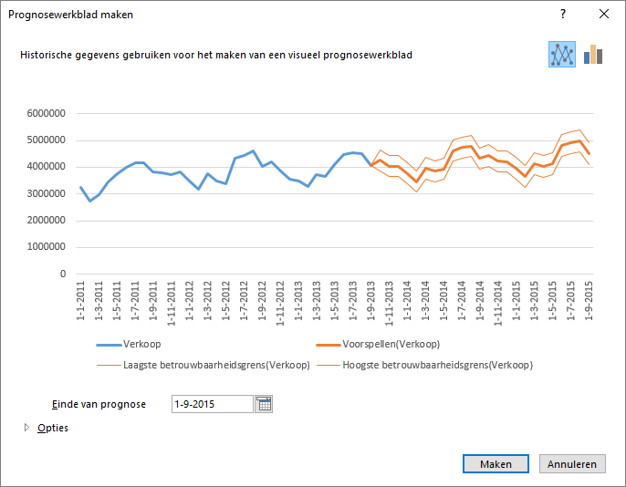

Wanneer je in Excel een prognose maakt, dan wordt hiervoor een nieuw werkblad gemaakt
met daarin een tabel met de oorspronkelijke gegevens en de voorspelde waarden en
verder een grafiek waarin deze waarden staan weergegeven. Dat nieuwe werkblad wordt
ook wel Voorspellingblad genoemd.
Bestand:Verkopen.csv
Importeer het hulpbestand via Gegevens ophalen en
transformeren.
Voor hulp hierbij zie hoofdstuk Importeren
gegevens.
Selecteer een willekeurige cel in het gegevensgebied.
Kies tab Gegevens > Voorspellingblad (groep Voorspelling)
Het dialoogvenster Prognosewerkblad maken
verschijnt.
Figuur 1: Prognosewerkblad maken

In dit venster kun je een aantal keuzes maken.
Grafiektype (rechtsboven): lijndiagram of kolomdiagram
Einde van prognose (linksonder): de einddatum voor de prognose, dus
het aantal prognoses.
Opties (linksonder): een aantal geavanceerde instellingen
Stel Einde van prognose in op 1 december 2013. Klik dan op
Maken.
Er wordt een nieuw werkblad gemaakt met daarin de historische gegevens, de
voorspelde waarden, betrouwbaarheidsgrenzen (standaard 95%) en een
grafiek.
Datum
Voorspellen
Laagste betrouwbaarheidsgrens
Hoogste betrouwbaarheidsgrens
01-10-2013
4264177
3869915
4658439
01-11-2013
4033806
3639542
4428070
01-12-2013
4033625
3639358
4427892
Opmerking:
De voorspelde waarden worden berekend met de functie
VOORSPELLEN.ETS
De betrouwbaarheidsgrenzen worden berekend met de functie
VOORSPELLEN.ETS.CONFINT